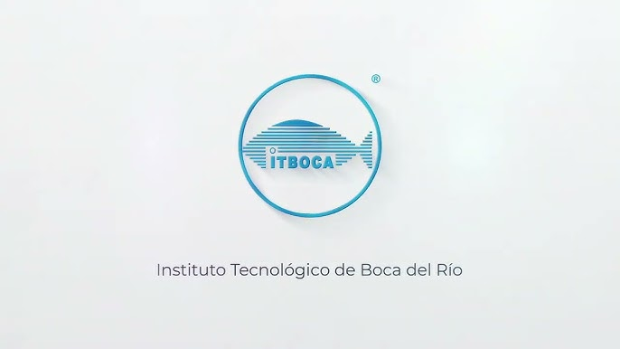

| Universidades: | Imágenes | Resumen | Información |
| Universidad Veracruzana | | La Universidad Veracruzana (UV) fue fundada en 1944 y adquiere su autonomia en 1996. Se ubica en el estado de Veracruz. | |
Tecnologico de Xalapa | | El Instituto Tecnologico Superior de Xalapa (ITSX) es una institucion adscrita al Tecnologico Nacional de Mexico (TecNM). | |
Tecnologico de perote |  | El Tecnológico de Perote (ITS Perote), también conocido como Tec Perote, es una institución pública de educación superior ubicada en Perote, Veracruz, México. | |
ITB Boca del Rio |  | El Instituto Tecnológico de Boca del Río (ITBoca) es una institución de educación superior tecnológica ubicada en Veracruz, México. | |